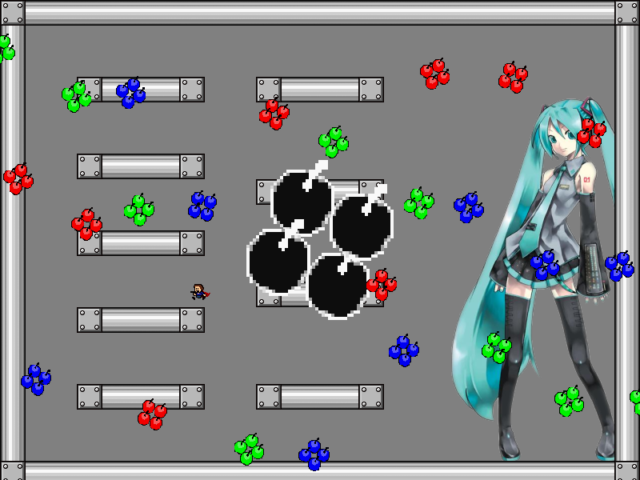
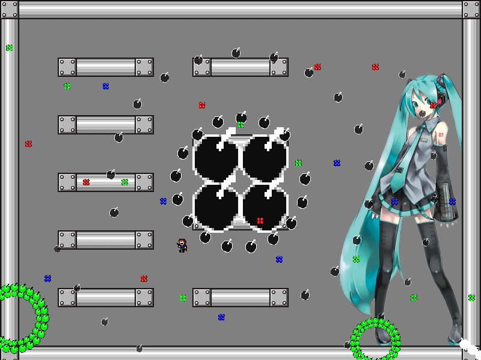

| creator | segment | label | jump |
|---|---|---|---|
| NN | 0:21.60~0:23.20 | R*A/Q | double |
2-2~2-3の解答に対応する弾幕です。
0:20.20において分裂した棒状弾幕に関して、これらは0:21.60において4つの弾により構成される四角形弾幕として再度出現します。
出現したそれぞれの四角形弾幕については、各時刻において中心とプレイヤーとの距離に反比例する大きさの加速度がプレイヤーから離れる方向に働き、また一度画面でもループした時点で当たり判定がなくなります。
